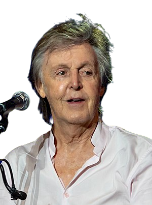
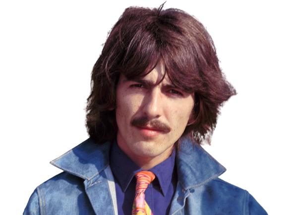
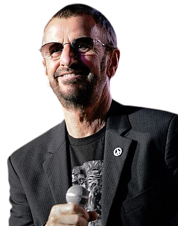

Τα μέλη του συγκροτήματος
| Τζον Λένον | Πολ ΜακΚάρτνεϊ | Τζωρτζ Χάρισον | Ρίνγκο Σταρ |
|---|---|---|---|
|

|

|

|
|
|
Ο Τζον Γουίνστον Όνο Λένον (John Winston Lennon, 9 Οκτωβρίου 1940) γνωστός απλά ως Τζον Λένον, ήταν Άγγλος τραγουδιστής, κιθαρίστας, τραγουδοποιός και ιδρυτικό μέλος του συγκροτήματος των Beatles.Ανάμεσα στις κορυφαίες δημιουργίες του ανήκει το τραγούδι Imagine. Δολοφονήθηκε από τον θαυμαστή του, Μαρκ Τσάπμαν στις 8 Δεκεμβρίου 1980. |
Ο Σερ Πολ ΜακΚάρτνεϊ ΜΒΑ (Paul McCartney, 18 Ιουνίου 1942) είναι βραβευμένος Άγγλος τραγουδιστής, στιχουργός και συνθέτης, καθώς και χρισμένος ιππότης, ο οποίος κέρδισε παγκόσμια φήμη ως ένα από τα ιδρυτικά μέλη του μουσικού συγκροτήματος των Beatles. Μαζί με τον Τζον Λένον έγραψαν τραγούδια τα οποία έχουν γίνει γνωστά σε ολόκληρο τον κόσμο. |
Ο Τζωρτζ Χάρισον (αγγλικά: George Harrison, 25 Φεβρουαρίου 1943 - 29 Νοεμβρίου 2001) ήταν Άγγλος κιθαρίστας και τραγουδιστής του μουσικού συγκροτήματος The Beatles. Αν και τα περισσότερα τραγούδια του συγκροτήματος γράφτηκαν από τους Τζον Λένον και Πωλ ΜακΚάρτνεϋ, στα περισσότερα άλμπουμ υπήρχε τουλάχιστον μια σύνθεση του Χάρισον. |
Ο Ρίτσαρντ Στάρκι (Richard Starkey, 7 Ιουλίου 1940), γνωστός ως Ρίνγκο Σταρ (Ringo Starr), είναι Άγγλος μουσικός, τραγουδιστής και ηθοποιός, περισσότερο γνωστός ως ντράμερ του μουσικού συγκροτήματος The Beatles. Γεννήθηκε στις 7 Ιουλίου του 1940 στο Λίβερπουλ της Αγγλίας. Πριν γίνει μέλος των Beatles το 1962, ήταν μέλος των Rory and The Hurricanes. |